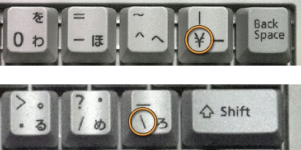
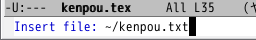
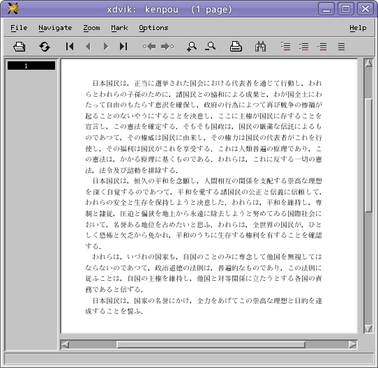
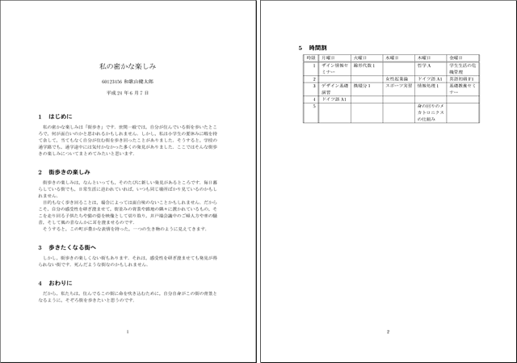

emacs などのテキストエディタには， ワードプロセッサのようなレイアウト機能はありません． そこで，ここでは論文のように書式の定まった印刷物を作成するのに用いられる LaTeX（ラテック） と，その下地となっている TeX（テック）というシステムについて解説します．理系にとって LaTeX は，論文作成のための「標準」です．
LaTeX に関する情報LaTeX に関する情報は，三重大学の奥村先生による TeX Wiki に網羅されています．Windows や Mac OS X で使用するための情報もあります．
パソコンのワードプロセッサのように，画面上でレイアウトを整えて印刷するような場合を，WYSIWYG （What You See Is What You Get ～見ているものが手に入る）と言います．この方法はわかりやすく，見た目の通りにに文書のレイアウトを行うことができます．しかしその反面，長い文書では全体のレイアウトを統一するのに結構骨が折れますし，文字のサイズや用紙のサイズを変更したりするとレイアウトをはじめからやり直さなければならないということもしばしば起こります．
これに対して TeX というシステムでは，Web ページのレイアウトを HTML で行ったのと同様に，文書のレイアウトを一種のプログラミング言語のような形式を用いて行います．この方法ではレイアウトをすぐに画面上で確認することはできませんが，長文でも統一の取れたレイアウトを保ちやすいというメリットがあります．また TeX は組版，すなわち印刷所で植字工がレイアウトの美しさを考えながら活字を詰めていく方法にならって設計されており，TeX の処理系（ソフトウェア）自身が仕上がりの美しさを考えながら，文字間隔などを自動的に決定してくれます．このように，様々な処理をまとめて一気に実行してしまう方式を，バッチ式と言います．
TeX とワープロでは，「どっちが楽か」という点で良く議論が起こります．取っつきやすさと言う点では，もちろんワープロに軍配が上がるでしょう．しかし，少なくとも私は，ワープロできれいに文書をレイアウトする手間を考えると，TeX に勝手にやってもらった方がずっと楽だと感じています．
ただ，TeX 自体はかなり細かな書式制御が可能な反面，論文のような定型的な文書を作成するのには手間がかかりすぎます．そこで HTML のように，「見出し」や「本文」のような文書の論理的構成要素を指定して書式を制御できるように TeX を拡張したものしたものが LaTeX です（歴史的には HTML より LaTeX の方が古いのですが）．しばしば，「TeX がマニュアル式の車だとすると， LaTeX はオートマチック車だ」という比喩が用いられます．
TeX や LaTeX を用いた文書は，書式を制御するための「コマンド」 （HTML における「タグ」に相当）を埋め込みます． このようなテキストファイルを TeX ソースファイルあるいは LaTeX ソースファイルと呼びます．
それでは，以前作成した「日本国憲法の前文」を， LaTeX を使って清書してみましょう． テキストエディタを使って，kenpou.tex という LaTeX ソースファイルを作成してください．TeX や LaTeX のソースファイルの拡張子は ".tex" です．「アプリケーション」の「オフィス」にある TeXworks は TeX / LaTeX 専用のテキストエディタです．また Geany なら，Geany の「ファイル」メニューにある「テンプレートから新規作成」から file.tex を選べば TeX / LaTeX 用のモードで新規の文書が作成されます．emacs の場合は引数に kenpou.tex というファイル名を指定してください．
| kenpou.tex を作成する |
|---|
% emacs kenpou.tex &[Enter] |
なお，このように して emacs を起動すると，画面が二分割されてしまいます．kenpou.tex が表示されている（空の）ウィンドウのほうで C-x 1 をタイプしてください．その後，下の内容をタイプしてください． なお，￥ (通貨記号) と＼ (バックスラッシュ) は，ここでは字形が違うだけで同じ文字です.

\documentclass{jarticle}
\begin{document}
\end{document}
\begin{document} と \end{document} の間に，以前作成した kenpou.txt というファイルを読み込みます．別のテキストエディタで kenpou.tex を開いて，全文を \begin{document} と \end{document} の間にコピー＆ペーストしてください．emacs の場合は \begin{document} と \end{document} の中間にカーソルを移動し，そこで C-x i をタイプしてください．すると， このバッファに読み込むファイル名を聞いてきますので， ここにファイル名 (kenpou.txt) をタイプしてください．
| ファイルを編集中のファイルに読み込む | |
|---|---|
| C-x i をタイプし，ミニバッファに読み込むファイル名をタイプする． |  |
kenpou.txt が読み込めないときおそらく，この emacs はホームディレクトリで起動していると思います．しかし，emacs をほかのディレクトリで起動していたり，あるいは kenpou.txt の方をホームディレクトリ以外に置いている場合は，このままではファイルを読み込むことができません．
ファイル名の入力中にタブキー [Tab] を２回タイプすると，ファイルやディレクトリの一覧を表示します．そこでファイル名の代りにディレクトリ名をタイプして，もう一度 [Tab] を２回タイプすれば，そのディレクトリの中にあるファイルの一覧を表示しますから，こうして目的のファイルを探してください．
次のように，kenpou.txt の内容が取り込まれます．
\documentclass{jarticle}
\begin{document}
日本国憲法「前文」（昭和21年11月3日公布，昭和22年5月3日施行）
日本国民は，正当に選挙された国会における代表者を通じて行動し，われら
とわれらの子孫のために，諸国民との協和による成果と，わが国全土にわたっ
て自由のもたらす恵沢を確保し，政府の行為によつて再び戦争の惨禍が起るこ
とのないやうにすることを決意し，ここに主権が国民に存することを宣言し，
この憲法を確定する．そもそも国政は，国民の厳粛な信託によるものであつて，
その権威は国民に由来し，その権力は国民の代表者がこれを行使し，その福利
は国民がこれを享受する．これは人類普遍の原理であり，この憲法は，かかる
原理に基くものである．われらは，これに反する一切の憲法，法令及び詔勅を
排除する．
日本国民は，恒久の平和を念願し，人間相互の関係を支配する崇高な理想を
深く自覚するのであつて，平和を愛する諸国民の公正と信義に信頼して，われ
らの安全と生存を保持しようと決意した．われらは，平和を維持し，専制と隷
従，圧迫と偏狭を地上から永遠に除去しようと努めてゐる国際社会において，
名誉ある地位を占めたいと思ふ．われらは，全世界の国民が，ひとしく恐怖と
欠乏から免かれ，平和のうちに生存する権利を有することを確認する．
われらは，いづれの国家も，自国のことのみに専念して他国を無視してはな
らないのであつて，政治道徳の法則は，普遍的なものであり，この法則に従ふ
ことは，自国の主権を維持し，他国と対等関係に立たうとする各国の責務であ
ると信ずる．
日本国民は，国家の名誉にかけ，全力をあげてこの崇高な理想と目的を達成
することを誓ふ．
和歌山健太郎
\end{document}
これに対して次の変更を加えてください．
こうして，下のような体裁にします． プログラムで行末の処理を行うので， この LaTeX のソースファイルで 行末をそろえる必要はありません．むしろ下のように句読点で積極的に改行しておくと，編集するときに便利です．
\documentclass{jarticle}
\begin{document}
日本国民は，正当に選挙された国会における代表者を通じて行動し，
われらとわれらの子孫のために，諸国民との協和による成果と，
わが国全土にわたって自由のもたらす恵沢を確保し，
政府の行為によつて再び戦争の惨禍が起ることのないやうにすることを決意し，
ここに主権が国民に存することを宣言し，この憲法を確定する．
そもそも国政は，国民の厳粛な信託によるものであつて，
その権威は国民に由来し，その権力は国民の代表者がこれを行使し，
その福利は国民がこれを享受する．
これは人類普遍の原理であり，この憲法は，かかる原理に基くものである．
われらは，これに反する一切の憲法，法令及び詔勅を排除する．
日本国民は，恒久の平和を念願し，
人間相互の関係を支配する崇高な理想を深く自覚するのであつて，
平和を愛する諸国民の公正と信義に信頼して，
われらの安全と生存を保持しようと決意した．
われらは，平和を維持し，専制と隷従，
圧迫と偏狭を地上から永遠に除去しようと努めてゐる国際社会において，
名誉ある地位を占めたいと思ふ．
われらは，全世界の国民が，ひとしく恐怖と欠乏から免かれ，
平和のうちに生存する権利を有することを確認する．
われらは，いづれの国家も，
自国のことのみに専念して他国を無視してはならないのであつて，
政治道徳の法則は，普遍的なものであり，この法則に従ふことは，
自国の主権を維持し，他国と対等関係に立たうとする各国の責務であると信ずる．
日本国民は，国家の名誉にかけ，
全力をあげてこの崇高な理想と目的を達成することを誓ふ．
\end{document}
ここまでできたら C-x C-s をタイプして， ファイルを保存してください．次に，このファイルをコンパイルします．ターミナルのウィンドウで次のコマンドを実行してください．
| LaTeX ソースファイルのコンパイル |
|---|
% platex kenpou[Enter] |
もし，エラーが発生していなければ， kenpou.dvi というファイルが作成されるはずです．
platex でエラーが発生したときplatex が次のようなメッセージを出した時は，LaTeX ソースファイルの書き方に誤りがあります．
% platex kenpou.tex This is pTeX, Version p2.1.5, based on TeX, Version 3.14159 (EUC) (Web2c 7.0) (kenpou.tex pLaTeX2e <1997/07/02>+2 (based on LaTeX2e <1996/12/01> patch level 0) (/usr/local/share/texmf/tex/platex/jarticle.cls Document Class: jarticle 1997/09/03 v1.1h Standard pLaTeX class (/usr/local/share/texmf/tex/platex/jsize12.clo)) ! Undefined control sequence. l.3 \begn {document} ? xこの時は，最後の ? のところに x をタイプして改行し， platex を終了してから kenpou.tex を修正してください．
kenpou.dvi は TeX (LaTeX) によってレイアウトを整えた印刷用のデータファイルで，DVI ファイルと言います．それでは xdvi コマンドを使って，このファイルの内容を画面上で確認してみましょう．
| kenpou.dvi ファイルのプレビュー |
|---|
% xdvi kenpou &[Enter] |
次のようなウィンドウが現れます．LaTeX ソースファイル (kenpou.tex) の改行は無視され，空行で段落が改められています．

レイアウトが確認できたら，q をタイプするか「Quit」のボタンをクリックして xdvi を終了してください．
次に，この文書にタイトルや著者名を追加します．emacs を閉じてしまったときは，もう一度 emacs で kenpou.tex を開いてください．
\documentclass{jarticle}
\begin{document}
日本国民は，正当に選挙された国会における代表者を通じて行動し，われら
（以下略）
この \begin{document} の前後に， 次の内容（下線部）を追加してください．
\documentclass{jarticle}
\title{日本国憲法「前文」
(昭和21年11月3日公布，昭和22年5月3日施行)}
\author{和歌山健太郎}
\begin{document}
\maketitle
日本国民は，正当に選挙された国会における代表者を通じて行動し，われら
（以下略）
変更できたらファイル (kenpou.tex) を保存して， 先ほどと同様に platex コマンドを使って kenpou.tex をコンパイルし，xdvi を使って作成された kenpou.dvi を見てみてください．
段落を改めるのではなく，行の途中で改行したいときは， そこに \\ を置いてください． 上の例のタイトルを途中で改行するには， 例えば下のようにします．
\title{日本国憲法「前文」\\
(昭和21年11月3日公布，昭和22年5月3日施行)}
文書クラス（スタイル）は \documentclass{ .. } で指定します．これは文書のレイアウトの規則を目的別に設定するものです． kenpou.tex で指定している jarticle は論文などを作成する際に用いるレイアウトです． ほかに本を執筆する jbook やレポート用の jreport が用意されています．
標準では，B5 版の用紙を想定したレイアウトが行われます． 演習室のプリンタには A4 版の用紙しか入っていないので， そのまま印刷すると周囲の余白が大きすぎます．
A4 用紙にあったレイアウトを行うには， \documentclass[a4j]{jarticle} のように，\documentclass コマンドに a4j というオプションを与えます．
\documentclass[a4j]{jarticle}
用紙サイズには，ほかに a5j b4j b5j が指定できます．
標準では，本文などに使用される文字のサイズは 10pt（10 ポイント， １ポイントは 1/72.27 インチ）です． これをひとまわり大きな 11pt に変更するには， \documentclass コマンドに 11pt というオプションを付けます．
\documentclass[11pt]{jarticle}
もちろん，これは用紙サイズといっしょに指定できます． この場合は ","（コンマ）で区切ります．
\documentclass[a4j,11pt]{jarticle}
ここに指定できる文字サイズは 10pt 11pt 12pt です．
２段組のレイアウトを行うときは，twocolumn というオプションを付けます． 両面印刷に対応したレイアウトを行うときは，twoside というオプションを付けます． ただし，これはレイアウト上そうなると言うだけで， 実際に両面印刷が行われるわけではありません． また，演習室のプリンタには両面印刷の機能はありません．
\documentclass[a4j,11pt,twocolumn]{jarticle}
TeX は印刷物を作成するためのシステムです．紙に印刷するには dvips コマンドを使って PostScript ファイルを作成してください．PostScript ファイルはプリンタ制御用の言語（ページ記述言語）です．なお，一般的なプリンタは Postscript に対応していません．
| DVI ファイルから PostScript ファイルの作成 |
|---|
% dvips kenpou[Enter] |
このコマンドを実行すれば，kenpou.ps という PostScript ファイルが作成されるはずです．PostScript ファイルを印刷するには，それを lpr コマンドでプリンタに送ります．
| PostScript ファイルの印刷 |
|---|
% lpr kenpou.ps[Enter] |
紙がもったいないので，今は印刷する必要はありません．今後，レポートを作成するときなどに思い出してください．
PDF (Portable Document Format) 形式のファイルを作成すれば，PostScript に対応しないプリンタで文書を印刷したり，Windows PC や Macintosh でも文書の表示や印刷を行うことができます．DVI ファイルから PDF ファイルを作成するには，dvipdfmx コマンドを使用します．
| PDF ファイルの作成 |
|---|
% dvipdfmx kenpou[Enter] |
これで kenpou.pdf というファイルが作成されます．これは evince コマンド (「アクセサリ」の「ドキュメントビューアー」) や acroread (Adobe Reader) を使って表示したり印刷したりできます．
| PDF ファイルの表示 |
|---|
% evince kenpou.pdf[Enter] |
ここまでを簡単にまとめると，次のようになります．
以下は「まとめ」ですので，実際に作業する必要はありません．宿題を実行する際の参考にしてください．
LaTeX による文書作成の手順は，まずテキストエディタを使って LaTeX のソースファイルを作成します．このファイルのファイル名の拡張子は .tex とします．次に platex コマンドを使って，その LaTeX ソースファイルをコンパイル（一括編集）します．これで .dvi という拡張子のファイル（DVI ファイル）が出力されます．ソースファイルのファイル名が report.tex なら，次のようにします．
| LaTeX ソースファイルのコンパイル |
|---|
% platex report[Enter] |
上のコマンドによって，report.dvi というファイルが作られます（ほかに report.log や report.aux というファイルもできます）．DVI ファイルを画面上で確認（プレビュー）するには，xdvi コマンドを使います．xdvi コマンドを終了するには q をタイプしてください．
| DVI ファイルのプレビュー |
|---|
% xdvi report &[Enter] |
印刷する場合には，まず dvips コマンドを使って，この DVI ファイルから PostScript ファイルを作成します．印刷しない場合は (7) に進んでください．
| DVI ファイルから PostScript ファイルの作成 |
|---|
% dvips report[Enter] |
上のコマンドでは report.ps というファイルが作成されます．
PostScript ファイルを画面上で確認するには evince コマンドまたは gv コマンドを使います．gv コマンドを終了するには q をタイプしてください．
| PostScriptファイルのプレビュー |
|---|
% gv report.ps &[Enter] |
PostScript ファイルを lpr コマンドでプリンタに送れば，印刷が開始されます．印刷する場合はいきなりプリンタに送らずに，必ず一旦 gv コマンドなどでプレビューして仕上がりを確認してください．
| PostScript ファイルの印刷 |
|---|
% lpr kenpou.ps[Enter] |
DVI ファイルから PDF (Portable Document Format) 形式のファイルを作成するには dvipdfmx コマンドを使用します．
| PDF ファイルの作成 |
|---|
% dvipdfmx report[Enter] |
これで report.pdf というファイルが作成されます．
PDF ファイルを画面に表示したり印刷したりするには，evince コマンドや acroread コマンドなどが使えます．ですが，今は印刷する必要はありません．
| PDF ファイルの表示 |
|---|
% evince kenpou.pdf[Enter] % acroread kenpou.pdf[Enter] |
次の (1), (2) の作業を行ってください．その後，メールの本文に (3) の内容を書き，(2) で作成した PDF ファイルを添付して tokoi@sys.wakayama-u.ac.jp に送ってください．メールの件名 (Subject) は shori1-08 にしてください．期限は次週の水曜日中までです．
